材料 8個分
※粉量を変えると自動計算されます
生地
折り込み用バター
作り方
生地
STEP 1
ホームベーカリーで生地を作る
ホームベーカリーに材料をセットし「生地コース」で生地を作ります。コルネッティは、クロワッサンよりもパンに近い食感に仕上げることが多いのが特徴です。そのため、生地をしっかり捏ねて一次発酵させることが、美味しく仕上げるポイントです。
ホームベーカリーに材料をセットし「生地コース」で生地を作ります。コルネッティは、クロワッサンよりもパンに近い食感に仕上げることが多いのが特徴です。そのため、生地をしっかり捏ねて一次発酵させることが、美味しく仕上げるポイントです。
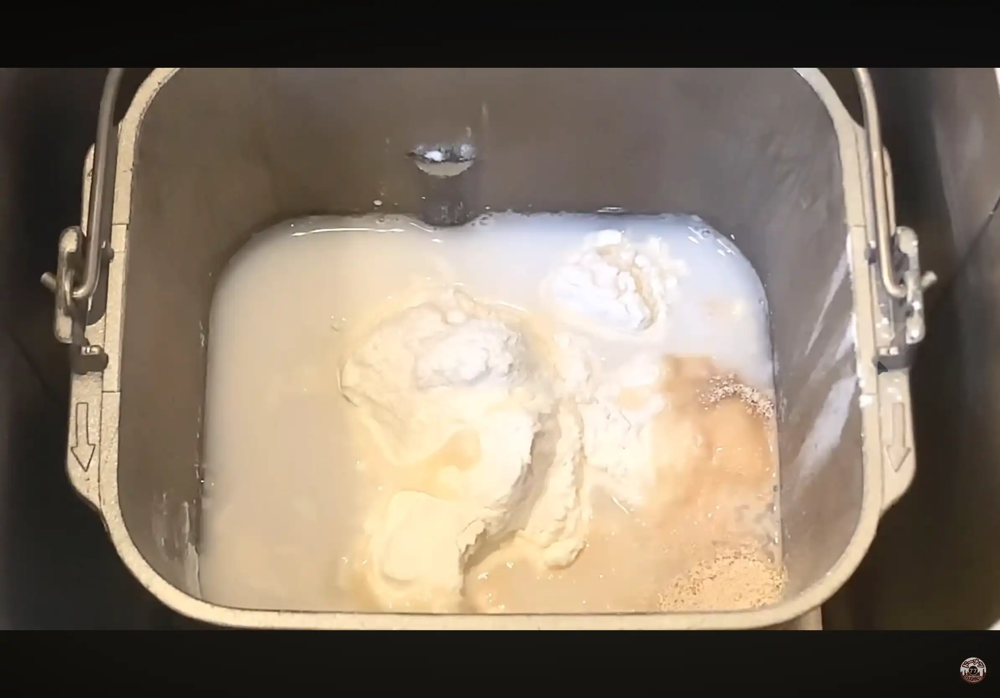
STEP 2
生地を取り出して丸め、常温で10分おく
ホームベーカリーで作った生地を取り出して丸め、表面を整えてラップをかけます。10分休ませると生地がゆるみ、次の20㎝×25㎝に伸ばす作業がしやすくなります。
ホームベーカリーで作った生地を取り出して丸め、表面を整えてラップをかけます。10分休ませると生地がゆるみ、次の20㎝×25㎝に伸ばす作業がしやすくなります。
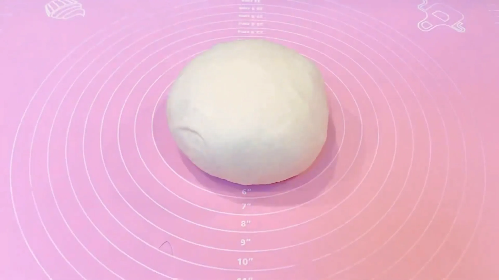
STEP 3
折り込み用バターを8g×12枚に切り分けておく
コルネッティでも、バターをシート状にせず、切り分けたバターをそのまま生地に並べて折り込みます。1枚8gと厳密に量る必要はなく、バター100gを12等分するイメージで切り分ければOKです。
コルネッティでも、バターをシート状にせず、切り分けたバターをそのまま生地に並べて折り込みます。1枚8gと厳密に量る必要はなく、バター100gを12等分するイメージで切り分ければOKです。
STEP 4
生地を20㎝×25㎝に伸ばす（[動画 01:02]）
めん棒を中央から左上、右上、左下、右下へと外側に動かしながら、20㎝×25㎝の長方形に伸ばします。四隅に向かって均等に伸ばすと、四角い形に整います。
めん棒を中央から左上、右上、左下、右下へと外側に動かしながら、20㎝×25㎝の長方形に伸ばします。四隅に向かって均等に伸ばすと、四角い形に整います。
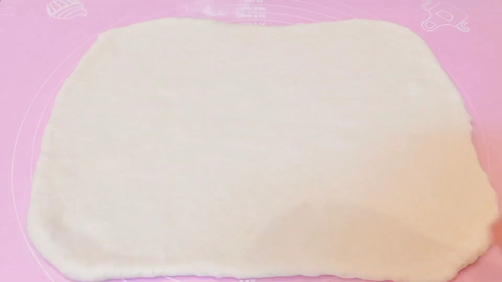
STEP 5
生地にバターを並べる（[動画 01:33]）
12枚のバターを全体が長方形になるように並べます。
12枚のバターを全体が長方形になるように並べます。
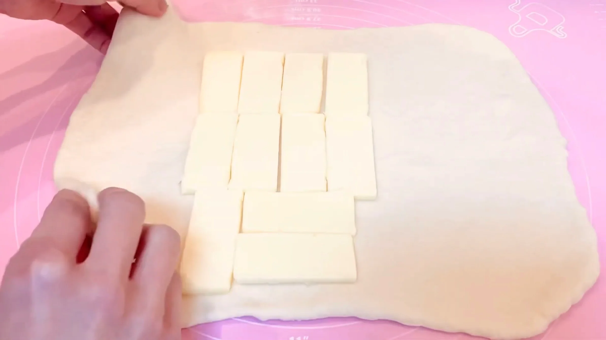
STEP 6
生地でバターを包む
生地の端を合わせて、並べた12枚のバターを包みます。バターがはみ出さないよう、隙間を作らずしっかり閉じます。
生地の端を合わせて、並べた12枚のバターを包みます。バターがはみ出さないよう、隙間を作らずしっかり閉じます。
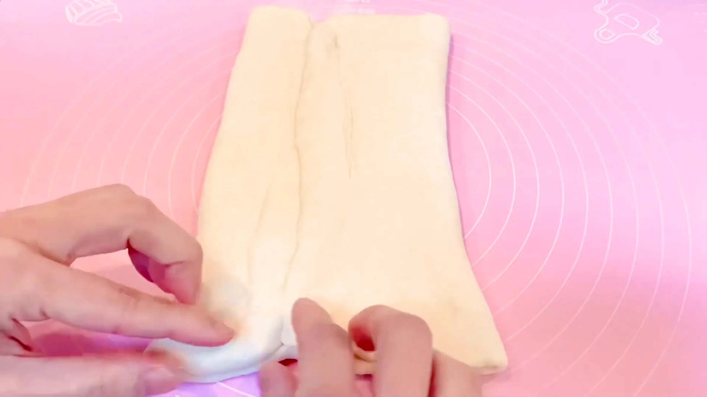
STEP 7
生地を25㎝×45㎝に伸ばす（[動画 02:48]）
包み終えた生地は、まだ生地もバターも固い状態です。まず中心から外側へ向けてめん棒で押し、なじんできたら転がして、25㎝×45㎝まで均一な厚みに伸ばします。
包み終えた生地は、まだ生地もバターも固い状態です。まず中心から外側へ向けてめん棒で押し、なじんできたら転がして、25㎝×45㎝まで均一な厚みに伸ばします。
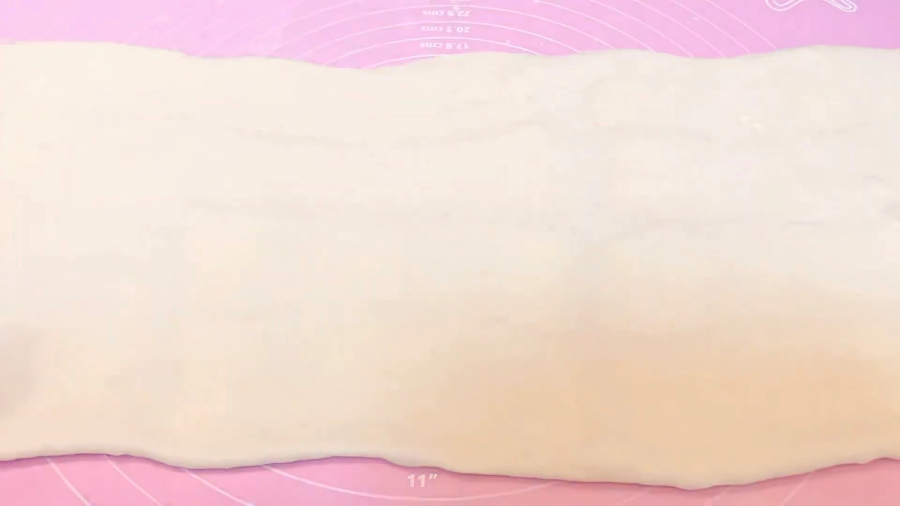
STEP 8
生地を三つ折りにする
生地を三つ折りにすることで、生地とバターの層が重なり、焼いたときにサクサクとした層が生まれます。折り目をできるだけそろえ、バターがはみ出さないように折りたたみます。
生地を三つ折りにすることで、生地とバターの層が重なり、焼いたときにサクサクとした層が生まれます。折り目をできるだけそろえ、バターがはみ出さないように折りたたみます。
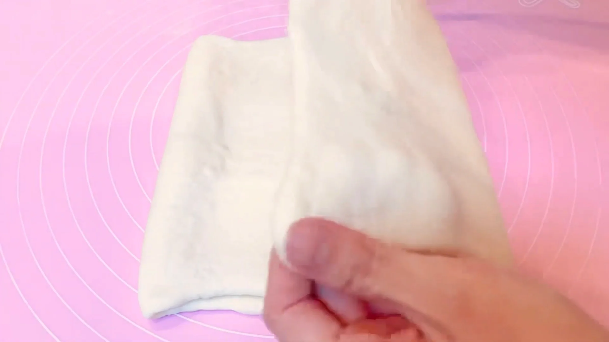
STEP 9
生地をラップで包み、30分冷凍する
折り込みで柔らかくなったバターを冷やして締めることで、次の伸ばし作業でバターが生地からはみ出しにくくなります。生地もしっかり冷えた状態にしてから、次の作業に進みます。
折り込みで柔らかくなったバターを冷やして締めることで、次の伸ばし作業でバターが生地からはみ出しにくくなります。生地もしっかり冷えた状態にしてから、次の作業に進みます。
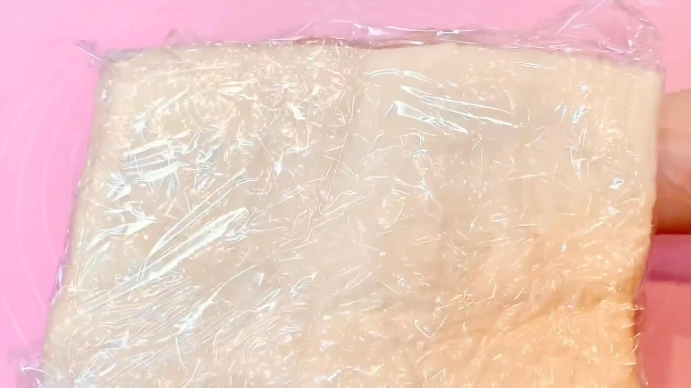
STEP 10
生地を25㎝×40㎝に伸ばす
冷凍した直後の生地は固いので、最初は無理をせず、めん棒で押しながら少しずつ伸ばします。やわらかくなったら、めん棒を転がして25㎝×40㎝に整えます。この生地を、次の工程で三角形に切り分けます。
冷凍した直後の生地は固いので、最初は無理をせず、めん棒で押しながら少しずつ伸ばします。やわらかくなったら、めん棒を転がして25㎝×40㎝に整えます。この生地を、次の工程で三角形に切り分けます。
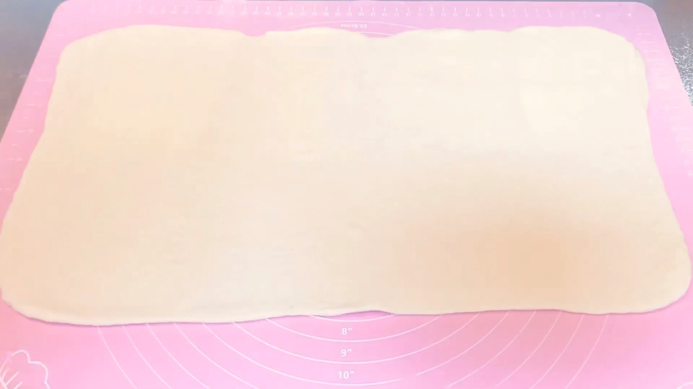
STEP 11
三角形に8等分する
生地を画像のように切り分けます。（切り落とした生地の端は、ぐるぐる巻きに成形して焼きます。）
生地を画像のように切り分けます。（切り落とした生地の端は、ぐるぐる巻きに成形して焼きます。）
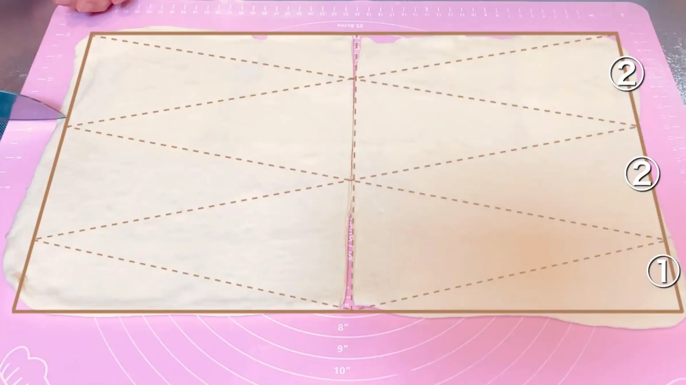
STEP 12
底辺の中央に2㎝程切れ目を入れる
中央に切れ目を入れると、左右を少し開いてから巻き始められるため、底辺から頂点に向かって自然に幅を狭めながら巻くことができます。また、巻き始めが厚くなりすぎず、左右のバランスが取れた三日月形に成形しやすくなります。
中央に切れ目を入れると、左右を少し開いてから巻き始められるため、底辺から頂点に向かって自然に幅を狭めながら巻くことができます。また、巻き始めが厚くなりすぎず、左右のバランスが取れた三日月形に成形しやすくなります。
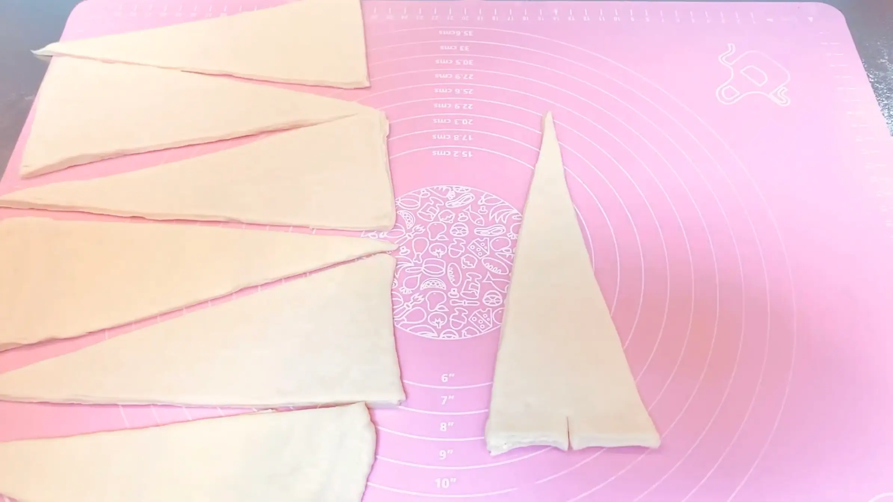
STEP 13
くるくる巻いて成形する（[動画 05:29]）
切れ目を入れた部分を左右に広げて芯を作り、頂点に向かって巻いていきます。生地を無理に引っ張らず、軽く巻きます。
切れ目を入れた部分を左右に広げて芯を作り、頂点に向かって巻いていきます。生地を無理に引っ張らず、軽く巻きます。
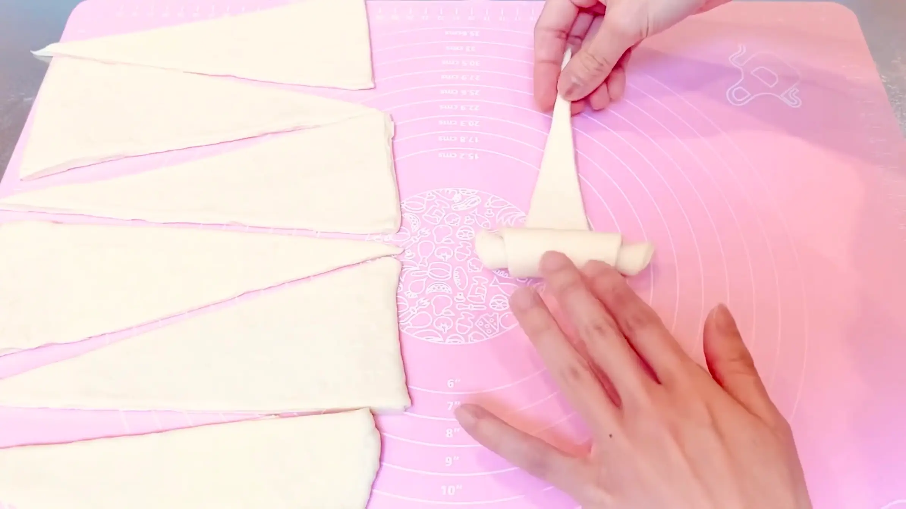
STEP 14
天板に並べ、ラップをして常温で1時間おく
巻き終わりを下にして天板に並べ、ラップをかけて1時間おきます。冷凍した生地は発酵が進みにくいので、時間は目安にして、ひと回り大きくふんわりしてきたら焼成に進みます。
巻き終わりを下にして天板に並べ、ラップをかけて1時間おきます。冷凍した生地は発酵が進みにくいので、時間は目安にして、ひと回り大きくふんわりしてきたら焼成に進みます。
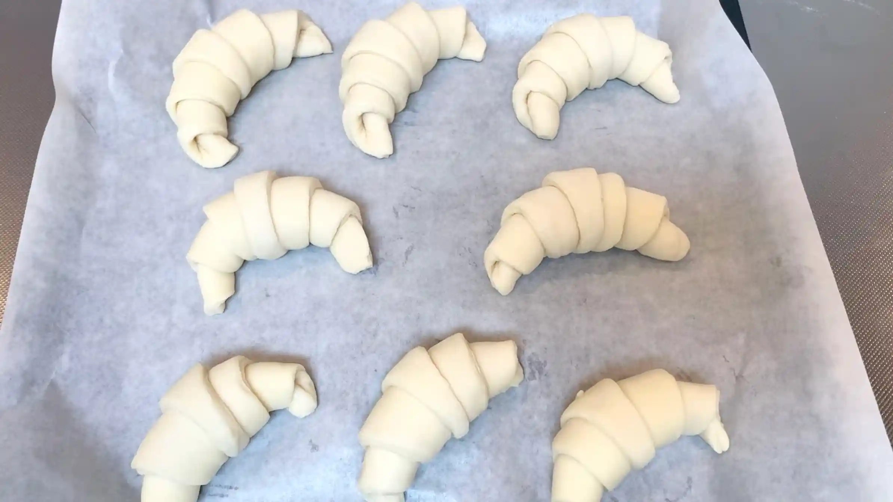
STEP 15
オーブンを190℃に予熱する
焼成温度までしっかり予熱しておくことで、生地を入れた瞬間から安定して焼き始められます。
焼成温度までしっかり予熱しておくことで、生地を入れた瞬間から安定して焼き始められます。
STEP 16
オーブン190℃で20分焼く
190℃で20分を目安に焼きます。表面と底の両方にこんがり焼き色がつくまで様子を見て、オーブンに合わせて時間を調整してください。
190℃で20分を目安に焼きます。表面と底の両方にこんがり焼き色がつくまで様子を見て、オーブンに合わせて時間を調整してください。
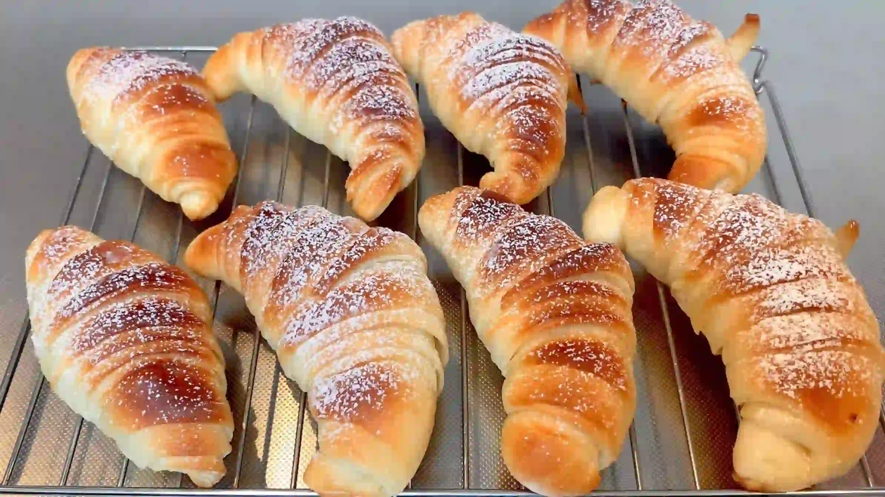
動画でチェック
おいしく作るためのワンポイントコラム
こんにちは、おなおドーナツです！
今回は、イタリアの定番朝食として愛されている、おしゃれなクロワッサン『コルネッティ』をおうちで作っていきます。普通のクロワッサンよりも手軽に作れて、独特の食感を引き出すための3つのコツをまとめました。
① 生地のコツ
コルネッティは、クロワッサンよりもパンに近い食感に仕上げることが多いのが特徴です。そのため、生地をしっかり捏ねて一次発酵させることで、パンらしいふっくらとした食べ応えを出します。さらに、折り込みの回数を抑えることで、サクサクとした層の中にもパンらしいふっくらとした食感を残しています。
② 折り込みのコツ
今回のコルネッティは3つ折りを1回だけで作ります。折り込み回数を減らすことで、サクサク感の中にパンらしいふっくらとした食べ応えを生み出しています。折り込み回数は本場のレシピでも「三つ折り×3回」や「四つ折り×三つ折り」など様々で、特に決まりはないようですね。
③ 成形のコツ
生地を二等辺三角形にカットしたあと、底辺の中央に1.5cmほどの切れ込みを入れます。巻くときに生地が横長に広がるため、オーブンの中でふんわりと立体的に膨らむ効果があります。三角形の高さを23〜25cmにして綺麗な4重の層を作るのがポイントです。
カフェでも人気のあるイタリアの本格パン。折り込み回数も少ないので、初めてのパン作りにもおすすめです！それでは、おうちパン作りの時間を一緒に満喫しましょう！
今回は、イタリアの定番朝食として愛されている、おしゃれなクロワッサン『コルネッティ』をおうちで作っていきます。普通のクロワッサンよりも手軽に作れて、独特の食感を引き出すための3つのコツをまとめました。
① 生地のコツ
コルネッティは、クロワッサンよりもパンに近い食感に仕上げることが多いのが特徴です。そのため、生地をしっかり捏ねて一次発酵させることで、パンらしいふっくらとした食べ応えを出します。さらに、折り込みの回数を抑えることで、サクサクとした層の中にもパンらしいふっくらとした食感を残しています。
② 折り込みのコツ
今回のコルネッティは3つ折りを1回だけで作ります。折り込み回数を減らすことで、サクサク感の中にパンらしいふっくらとした食べ応えを生み出しています。折り込み回数は本場のレシピでも「三つ折り×3回」や「四つ折り×三つ折り」など様々で、特に決まりはないようですね。
③ 成形のコツ
生地を二等辺三角形にカットしたあと、底辺の中央に1.5cmほどの切れ込みを入れます。巻くときに生地が横長に広がるため、オーブンの中でふんわりと立体的に膨らむ効果があります。三角形の高さを23〜25cmにして綺麗な4重の層を作るのがポイントです。
カフェでも人気のあるイタリアの本格パン。折り込み回数も少ないので、初めてのパン作りにもおすすめです！それでは、おうちパン作りの時間を一緒に満喫しましょう！


イタリアの定番朝食として愛される、おしゃれなクロワッサン『コルネッティ』のレシピです！ホームベーカリーを使い、おうちで手軽にイタリア気分のパン作りに挑戦します。コラムでは「生地のコツ」「折り込みのコツ」「成形のコツ」の3つのポイントをシンプルにご紹介します。